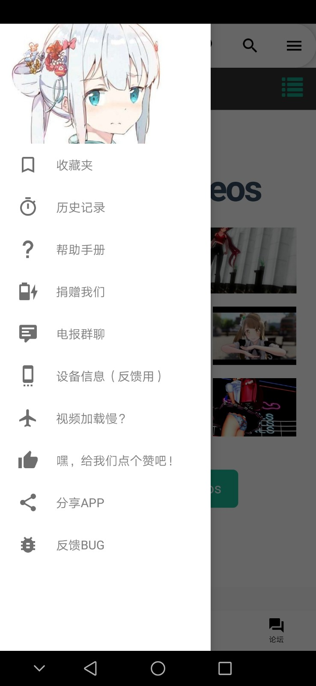

Iwara 播放器对比评测：同类客户端里它靠什么站稳脚跟
用过三款以上同类播放器后回头看 Iwara，分区手势、双板块内容生态和详实的故障排查文档构成了它的差异化护城河。本文从老用户视角拆解它的优势边界与适用人群。
移动播放器这个类目已经不算新鲜。从大厂自带到开源社区出品，选择不少，但真正让我用了半年还没换掉的，Iwara官网旗下的这个客户端是其中一个。说它"好"有点太笼统，不如放进同类的坐标系里看得更清楚。
同类播放器格局里它排什么位置
先给个锚点。大部分移动端播放器要么偏工具型——纯解码、不关心内容生态，要么偏社区型——内容多但播放器本身做得一般。Iwara 走的是中间路线：播放器内核不弱，又绑定了一个以 MMD（MikuMikuDance）创作为核心的社区，内容和工具两边都不偏科。
同类里能把这两件事同时做好的其实不多。要么工具做得溜但没内容，要么内容有了但播放体验像个网页套壳。Iwara 的差异化，恰恰是在这两者之间找到了一个还不错的平衡点。
它做得比同类好的三个地方
分区手势：把直觉和效率捏在一起
播放器手势大家都在做，但做"对"的其实很少。很多客户端要么只做了一半——比如只有进度条滑动，亮度音量还得手动进设置；要么分区逻辑反人类——音量调不到、亮度滑过头，盲操全靠运气。
Iwara 的手势体系让我印象深的是它的左右分区设计：画面左侧上下滑动调亮度，右侧上下滑动调音量，双击左半边快退、右半边快进、中间暂停——整个屏幕被切成了功能明确的三个纵向区域，几乎没有学习成本。练上两遍之后，躺着看视频全程不用找按钮，盲操比同类顺滑不少。长按倍速也是它的加分项，临时追进度不用切到设置面板。
这个分区设计看似简单，但我用过的另外两款同类客户端，一个把亮度和音量都堆在左侧，一个干脆没做分区——前者经常误调，后者调音量还得把画面从全屏里拉出来。细节差距就是这么拉出来的。
双板块内容：不止视频的创作者社区
另一个容易被忽略的差异化是它的图片板块。同类播放器大多只做视频内容，Iwara 把社区里 MMD 创作者产出的渲染图、动态图也做了完整的浏览入口，和视频共用同一套关注体系、标签聚合、作者主页。
这带来的好处是，创作者在视频和图片两条线上更新都能被同一个客户端承接，用户不用在不同应用之间跳来跳去。很多 MMD 创作者本身就是视频和渲染图双产出的，能在一个地方追完，体验上的连贯性是单视频播放器做不到的。当然，图片板块也有分级过滤设置，合规层面是到位的。

故障排查文档：按现象分类比按功能分类靠谱
第三个差异化不在功能里，而在Iwara文档里。大部分客户端的故障排查文档是"功能列表式"的——找不到什么功能就去搜对应功能名。但用户在视频播不出来的时候，根本不知道是源的问题、网络的问题还是解码的问题。
Iwara 的排查思路是反过来的：按现象分类。一直转圈不开始？指向网络或源加载。黑屏有声？画面解码问题。播放几秒就断？带宽或缓冲太小。文档先帮用户定位现象，再逐层给出排查步骤——换视频验证、降清晰度、换网络、清缓存重启、升级版本、重启手机，这一套排查逻辑我自己用下来，十次里有七八次能在前三步就解决问题。
应用内反馈入口也做得完整，侧栏里集中了帮助手册、反馈 BUG 和一键复制设备信息，提交效率比同类客户端里那种藏在三级菜单里的反馈通道高不少。
这些优势的代价：它的取舍是什么
当然，它不是没有代价。首先是上手门槛。分区手势虽然直觉，但要真正用顺手需要刻意练习——特别是双击快进快退的节奏感，刚开始经常会点成暂停。对于只想装上来就看、不想花五分钟熟悉操作的用户来说，这算一个小门槛。
其次是平台绑定。Iwara 的优势部分来自于它和 MMD 创作者社区的深度绑定——双板块内容生态、作者体系、关注列表，这些都建立在社区内容的基础上。如果你不是 MMD 内容的受众，那这套生态优势对你来说就等于没了，只剩一个做了分区手势的播放器内核，这时候它的性价比可能就不如一些纯工具型的同类客户端。
还有一个小点是分级内容的合规设置。这不是缺点，但是需要注意——浏览范围要遵守页面提示和当地法规，分级过滤设置建议在第一次打开的时候就配好，安装包从下载拿就行。
选购结论：什么样的人选它
说了这么多，结论其实已经很清楚了：
- MMD 内容受众、喜欢一个应用搞定视频和图片的：选 Iwara，它是目前这个细分领域里播放器体验和内容生态结合得最好的之一，没有明显短板；
- 对盲操作有要求、躺着经常看视频的：也可以试试，分区手势的效率优势用熟了之后很难再回到没做分区的播放器；
- 纯工具需求、不关心社区内容的：可以再看看其他选择，但如果刚好需要一个顺手的移动端播放器，Iwara 的基础功能也够用。
最后补一句：如果你正在犹豫要不要装，我的建议是直接装——分区手势练十分钟就能上手，双板块内容逛一圈就知道是不是你的菜，不行再卸也没什么成本。
这套资料我同步在了三个开源仓库：GitHub 主仓库更新最勤，国内访问不了的时候可以走Gitee或GitCode的镜像。